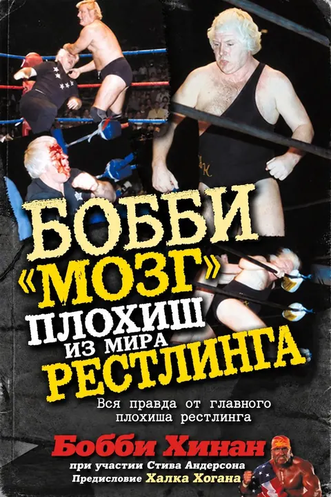

Бобби Хинан
Плохиш из мира рестлинга
Самый острый язык рестлинга — о AWA, WWF и Горилле Монсуне.
Bobby the Brain: Wrestling's Bad Boy Tells All · 2002
15 разделов · ≈5 ч чтения
Библиотека переводов VSplanet.net
С 2011 года читатели VSplanet переводят автобиографии звёзд рестлинга для таких же фанатов, как они сами. Из любви к рестлингу и желания делиться историями, которые заслуживают быть услышанными.
Теперь все эти переводы собраны в одном месте — в удобной читалке с закладками и офлайн-режимом. Без регистрации и лишних сложностей.
Некоторые книги так и остались недопереведёнными. Но мы верим, что вместе сможем довести их до конца.
Случайные строки из книг. Листайте — или проваливайтесь в книгу, прямо к нужному абзацу.
Прогресс сохраняется в вашем браузере и подтягивается сюда сам.
Эти книги начали переводить, но не довели до конца, или переводят прямо сейчас. Читать можно уже то, что есть.
Знаете английский и любите рестлинг? Возьмите одну главу — и у книги появится продолжение. Идеальный литературный текст не нужен: вёрстку, проверку орфографии и EPUB берёт на себя сайт, готовая глава сразу попадает в читалку.
О каких годах рассказывает каждая книга — читайте историю рестлинга по порядку.